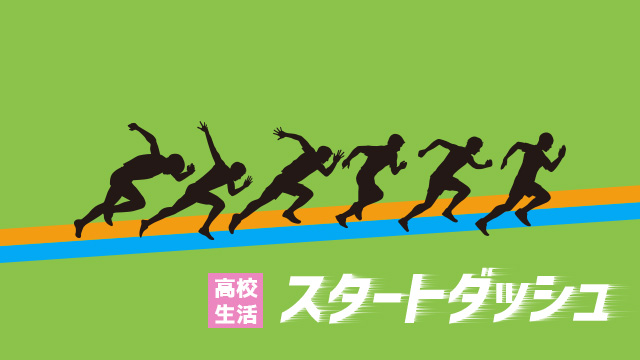

高校入試は一部を除いてほぼ終わりました。
受験生の皆さんお疲れさまでした。
今まで実力を出し切るよう皆さんにお伝えしてきましたがどうだったでしょうか。
「うん。ちゃんと力を発揮できたよ！」
「いやぁ、イマイチだった…」
…と様々でしょう。
いずれにしても入試は終わったのです。終わったことは全ていったん忘れ、また新たな気持ちで未来へ向けて前進していきましょう。
マァ、多くの受験生は正直ホッとしているところだと思います。「やっと終わった。遊ぶぞー」「友人とディズニーランドへ行って一日中遊びまくってやる」と意気込んでいるかもしれません(笑)。
ホッとしているのは受験生だけではありません。親の皆さんも子ども以上にこの一年間は張りつめた気持ちでいたと思います。
まさに「親も大変子どもの受験」といったところです。
親の皆さんも本当にお疲れさまでした。
さて、そんな受験を終えたばかりの皆さんに水を差すようですがまたまたおせっかいな話をちょっとだけしようと思います。
それは4月から始まる高校生活の最初の過ごし方。心がまえについてです。
最初のテスト結果がその後を左右する
高校受験は、受験生にとっても親にとってもそれなりに過酷な体験だったと思います。
特に首都圏は地方と違って、3～5校も受ける人が多く競争倍率も当然高い。
下手な大学入試よりも神経を使うほどです。
先ほど「ディズニーランドで遊びまくる」と言いましたが、そう思う子どもたちの気持ちも分かるのです。
首都圏の高校入試は過酷である
実は、ここに高校に入学してから起こる問題の一つがあります。
多くの受験生がたくさんの高校を受けたということは、それだけ生徒の疲労度が高いだけでなく（地方は1～2校がふつう）当然いくつかの受験に不合格になる率も高いわけです。
受験疲労と不合格の体験。
この2つが重なるとどうなるか。
私たちの経験から言えるのは、やはり2つの問題があること。1つめは入試後その解放感から抜け出せず高校1年の一学期間をムダに過ごす人が多いという現実。
もう一つは、第一志望に受からなかった人の一部がやる気をなくしたまま高校生活を送ってしまいがちなこと。
これは結構やっかいな問題で、私たちも頭を悩ませることが多いのです。
最初の、受験が終わった安堵感から一学期をムダにする話は、この首都圏に限らず高校新入生に通例の問題かもしれませんが、それでも競争率の高いこの地域に多く見られる現象です。
高1のはじめは、どうしても勉強に身が入らない子が多く出ます。受験が終わった安堵の気持ちや、まだ大学入試も遠いことから何となく無為に過ごしてしまう。
勉強に熱心でなくても部活その他打ち込むものがあるならまだ救いがありますが、少しボーっとしたままダラダラ過ごすことで、成績も急降下。特に高校は中学と違い、一定のレベルの生徒が集まっている以上、場合によってはビリに近い成績をとることも十分あり得ます。
結果として全てに自信がなくなる
というのも中学のときのように学校自体が手取り足取り面倒を見ることもなく、学習内容も高度なので油断すると最初の定期テストで「見たこともない点数」をとってしまうことがあります。高校は義務教育ではないので自己責任です。留年もあり得る。
恥を話すと私も。高1の最初の定期テストで、中学時代には考えられなかったひどい点をとりました。（確か生物、数学などはほぼビリ…）
その結果は、一学期だけにとどまらずそのまま一年間低迷が続いてしまう。最初に自信喪失したことが後々まで響くわけです。
恥ついでに話すと私の場合、その最初のつまずきが高校卒業まで続いてしまった。まさに身をもち崩し続けた3年間(笑)になったのです。←恐！
まっ、私のことはどうでもよいとして…。
今の生徒たち、いや今の時代のほうがこの最初のスタートダッシュにつまずく例は多いと感じています。
親の皆さんも「やっと高校受験が終わったのだから少し休ませてあげよう」「もう高校生だし親がうるさく言うことでもない」と考えるのでしょうか、あまり干渉しない人が多いのですがここは盲点かもしれません。
なので、新高1の生徒諸君親の皆さんにお願いです。
高1の一学期は手をゆるめず少しガンバって良い点をとってください。
過酷な首都圏の高校入試
もう一つ。第一志望に受からなかったといってやる気を失くす例です。
実は私が高校教師をしていたころこういう生徒をよく見かけました。
頭は良いのに全く勉強しない。無気力な生徒です。こういう子に注意すると「だってこの学校来たいところじゃなかったし…」と言うのです。
誰でも受験の時第一志望は自分の力よりやや上を狙うものです。だから難関高校の生徒であっても、さらにその上の超難関高校を受けてダメだったという子もいるわけです。
でも、難関校に受かったということは中学ではトップクラスの成績だったはずです。それなのに「ここは第一志望じゃないから」「どうせ第一志望に入れなかったオレだから」と勝手に自分に「劣等」のレッテルを貼ってドロップアウトしてしまうのです。
難関といわれる学校ですらこうなのですからまして中堅以下（偏差値レベルでいうなら）の高校では推して知るべし。
これは本当にもったいない話です。甘えているとしか言いようがありません。
これではわざと自分の首を絞めていると言わざるを得ません。
ただ、彼らの気持ちも分かります。首都圏の高校入試は今でも「偏差値によって細分化」され輪切りになっています。
4校も5校も受けなくてはならない現状もあって、その上で一番行きたいと願っている高校に首尾よく合格することは大変です。
私は千葉県の東葛地域で塾を運営して来ましたが、ここは人口急増地域の割に高校の数も少なく、都内に行きやすいとはいえ高校生にとってはやはり地元志向が根強いところでもあります。
公立でも実質の競争率は2倍を超えることも珍しくなく、私立でも実質3～4倍という過酷な入試が展開されます。恐らく日本一の高校入試激戦区だと思っています。
ここでは、第一志望はおろか第二志望に受かることも難しい。それどころか、偏差値的には上のはずの第一志望には受かったが第二や第三に落ちる逆転現象さえ珍しくないのです。
当然スベリ止め（言葉は悪いですが）にしか受からない子も出てきます。
公立1校だけ。せいぜい公立1校に私立1校しか受験せずしかもほとんど不合格にならないという、日本の大部分の地域の高校受験体験者にはとうてい分からない、厳しい現実がここには存在するのです。
自分の行く学校こそが良い学校
しかしそうはいっても第一志望に受からなかったという事実は、生徒本人にとっては重いものがあります。
人生で最初の挫折といえる体験かもしれません。
そういう生徒諸君に言いたいのは、確かに希望校に行けなかったのは残念だし悔しいでしょうが、そのことを「やる気もなく無為に過ごす」ことの理由にしてはならないということです。
それではもったいなさすぎるからです。
第一志望に受からなかったのは仕方ありません。人生は全てが思い通りにいくわけじゃない。冷たく聞こえるかも知れませんが、その事実は事実と受け入れて次に向かっていけばよいのです。
一番いけないのは自分に変なレッテルを貼って不当に自分をおとしめることです。
環境など自分次第でどうにでも変えていけるからです。次のことばをかみしめてください。
「行った高校で人生が決まるわけではない」
そう考えてください。その上で
「環境を良いものにするも悪いものにするも自分次第だ」
ということを知ってください。
人間関係も含めて自分のまわりの環境は、自分の心がけによっていくらでも創造できるのです。
周囲のせいにして自分の不遇を嘆くのは全く無意味でムダなことです。
慰めで言うのではなく
「自分の行く学校こそ自分にとってもっとも良い学校だ」と決めてください。そうすれば現実はその通り展開するでしょう。
（実際に私は第一志望校不合格をバネに勉強をガンバり、大学入試で最高の結果を出す例を何度も見てきました。）
最後に親の皆さんにひとこと。
もしお子さんが第一志望に入れなかったとしても、先に言ったように過酷な競争の現状を理解したうえで高校受験は人生の通過点であり、その成否によって人間の価値が変動するものではないことを「大人としての広い視点」で語っていただきたいと思います。
そしてお子さまが高校生活の良きスタートを切れるよう後押ししてください。受験生の親として最後のひと仕事になりますがよろしくお願いします。
それではもう一度生徒諸君にメッセージ。
「高校生活はスタートが肝心。気をゆるめずガンバレ！」